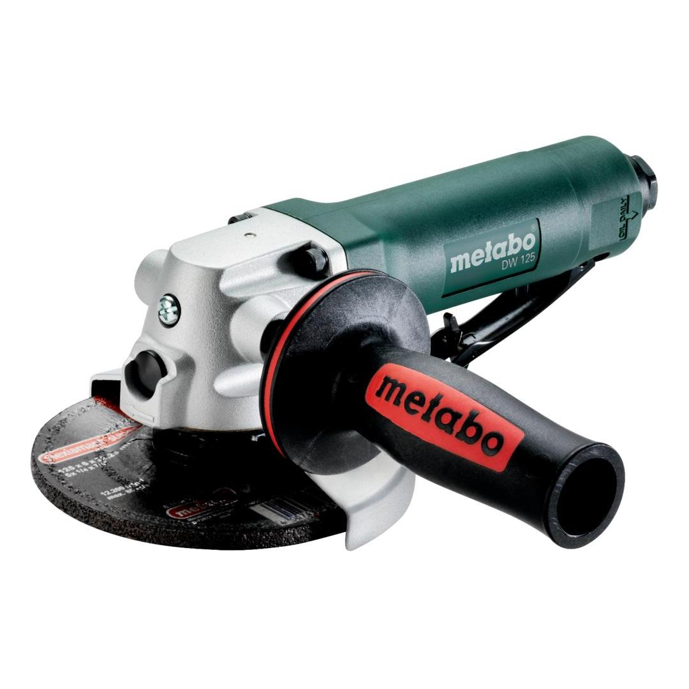

601556000

| Disc-Ø | 125 mm / 5 " |
| Operating pressure | 6.2 bar / 90 psi |
| Air requirement | 500 l/min / 18 cfm |
| Spindle thread | M 14 |
| Disc-Ø | 125 mm / 5 " |
| Operating pressure | 6.2 bar / 90 psi |
| Air requirement | 500 l/min / 18 cfm |
| No-load speed | 10000 rpm |
| Spindle thread | M 14 |
| Weight | 1.8 kg / 4 lbs |
| Grinding with sandpaper | 5.7 m/s² |
| Uncertainty of measurement K | 1.06 m/s² |
| Sound pressure level | 86 dB(A) |
| Sound power level (LwA) | 97 dB(A) |
| Uncertainty of measurement K | 3 dB(A) |
| EURO Plug-in nipple 1/4" |
| ARO/Orion Plug-in nipple 1/4" |
| ISO Plug-in nipple 1/4" |
| Hexagonal wrench |
| Side handle |
| Flat-pin spanners |
| Protective cover for disc |
| Open-jawed spanner |
| Oil bottles |